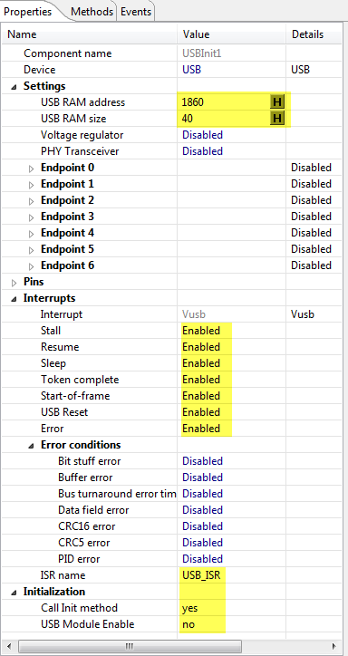
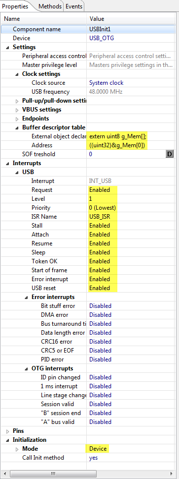
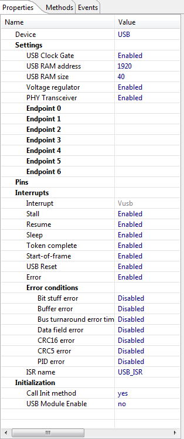
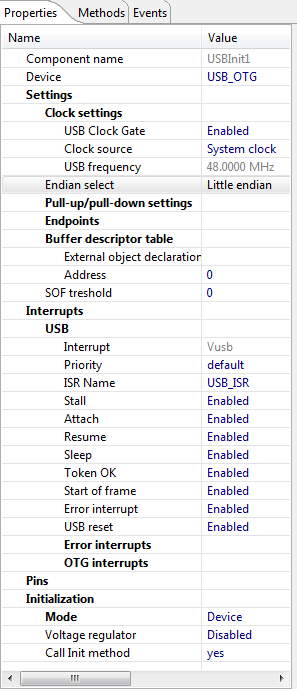
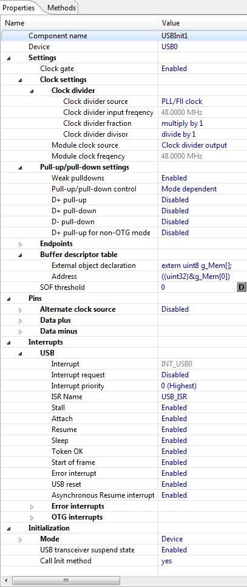

| FSL_USB_Stack | |
|
|

This component implements a Processor Expert Wrapper to the Freescale USB Stack.
To have this component working, you still need to initialize the USB peripheral using the the INIT_USB (or equivalent) components.
See the examples on Embedded Components
and MCU on Eclipse
for details.
Settings for S08JM60:
USB Init Settings for S08JM60/JM16:

Settings for MCF51JM128/JM64:
Disable linker file generation in the CPU component and add the following block between .text and .data: in the linker file:
{
. = ALIGN(512);
__BDT_BASE = .;
*(.usb_bdt)
__BDT_END = .;
} >> userram
USB Init Settings for MCF51JM128/JM64:

Settings for MCF52259:
Disable linker file generation in the CPU component and add the following (just at the end of } > data:
. = ALIGN(512); __BDT_BASE = .; *(.usb_bdt) __BDT_END = .; } > dataUSB Init Settings for MCF52259:

Settings for S08MM128:
USB Init Settings for S08MM128:

Settings for MCF51MM256:
Disable linker file generation in the CPU component and add the following block between .text and .dat (just after >> code): in the linker file:
.usb_bdt :
{
. = ALIGN(512);
__BDT_BASE = .;
*(.usb_bdt)
__BDT_END = .;
} >> userram
USB Init Settings for MCF51MM256:

Settings for Kintis K60:
USB Init Settings for Kinetis:
